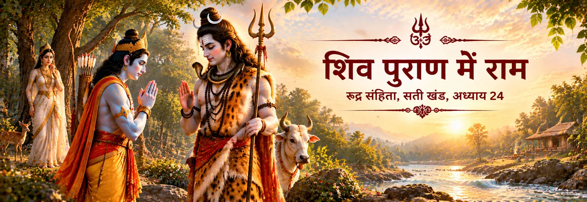

शिव राम को पहचानते हैं
शिव पुराण में शिव राम को पहचानकर उनके सामने झुकते हैं। यही भाव सती के मन में राम के वास्तविक स्वरूप को लेकर प्रश्न उत्पन्न करता है।

शास्त्र और परंपरा
शिव पुराण राम–शिव संबंध का एक विशिष्ट प्रसंग सुरक्षित रखता है। दण्डकारण्य में शिव राम को पहचानकर उन्हें प्रणाम करते हैं, जबकि सती यह देखकर आश्चर्य करती हैं कि सीता-वियोग से दुःखी दिखाई देने वाले राजकुमार राम के प्रति शिव इतनी श्रद्धा क्यों प्रकट कर रहे हैं।
इसके बाद कथा दिव्य पहचान के एक गहरे संवाद में बदल जाती है। सती सीता का रूप धारण करके राम की परीक्षा लेती हैं, लेकिन राम उन्हें पहचान लेते हैं। शिव पुराण की अपनी कथा-परंपरा में राम और शिव प्रतिद्वंद्वी नहीं, बल्कि परस्पर श्रद्धा से पहचाने जाने वाले दिव्य स्वरूपों के रूप में सामने आते हैं।
रुद्र संहिता · सती खण्ड
शिव पुराण इस भेंट को उस समय रखता है जब राम और लक्ष्मण दण्डकारण्य में सीता की खोज कर रहे होते हैं।
शिव पुराण में शिव राम को पहचानकर उनके सामने झुकते हैं। यही भाव सती के मन में राम के वास्तविक स्वरूप को लेकर प्रश्न उत्पन्न करता है।
सती के लिए शिव की श्रद्धा को समझना कठिन है, क्योंकि बाहर से राम सीता-वियोग और खोज की मानवीय पीड़ा से गुजरते दिखाई देते हैं। यही संशय कथा को आगे बढ़ाता है।
शिव पुराण की कथा के अनुसार सती सीता का रूप धारण करके राम की परीक्षा लेने का निर्णय करती हैं। फिर भी राम उन्हें पहचान लेते हैं और उस रूप के पीछे छिपे सत्य को समझते हैं।
कथा के भीतर राम की पहचान सती के संशय का उत्तर बन जाती है। इस प्रकार प्रसंग पारस्परिक पहचान पर आधारित है—शिव राम को पहचानते हैं और राम सती को पहचानते हैं।
सावधानी से पढ़ी जाने वाली परंपरा
इस प्रसंग को वाल्मीकि रामायण की हूबहू कथा के रूप में प्रस्तुत नहीं करना चाहिए। शिव पुराण इस भेंट को अपनी विशिष्ट धार्मिक दृष्टि से प्रस्तुत करता है—शिव राम को प्रणाम करते हैं, सती सीता का रूप धारण करके राम की परीक्षा लेती हैं और राम उन्हें पहचान लेते हैं। ये कथा-विवरण राम–शिव संबंध की शिव पुराणीय प्रस्तुति के अंग हैं।
किसी भक्तिपरक कथा का महत्व कम नहीं होता यदि उसके स्रोत को स्पष्ट रखा जाए। प्रत्येक विवरण को प्राचीनतम रामायण से जोड़ने के बजाय शिव पुराण को उसका स्रोत बताना परंपरा को अधिक स्पष्ट और सम्मानपूर्ण ढंग से समझने में सहायता करता है।
राम, शिव और भक्ति
इस प्रसंग को शैव और वैष्णव परंपराओं के संघर्ष के बजाय उनके पारस्परिक सम्मान और मिलन के रूप में पढ़ा जा सकता है।
कथा भक्त को राम के दिखाई देने वाले मानवीय दुःख से आगे उनके दिव्य स्वरूप को देखने की प्रेरणा देती है।
राम के सामने शिव का प्रणाम पदानुक्रम या प्रतिद्वंद्विता के बजाय श्रद्धा और भक्ति का गहरा प्रतीक बन जाता है।
कथा ऐसी भक्ति-दृष्टि के लिए स्थान बनाती है जिसमें राम और शिव की आराधना एक-दूसरे का निषेध नहीं करती।
कथा सती के संशय के माध्यम से बाहरी घटना से दिव्य पहचान के गहरे चिंतन की ओर ले जाती है।
भक्त के लिए
शिव पुराण का यह प्रसंग एक शांत मनन के लिए आमंत्रित करता है—दिव्य सत्य को अलग-अलग नामों और परंपराओं से जाना जा सकता है, फिर भी श्रद्धा उनके बीच प्रवाहित हो सकती है। शिव द्वारा राम की पहचान और राम द्वारा सती की पहचान वन के इस मिलन को पारस्परिक दिव्य बोध की कथा बना देती है।
ग्रंथीय संदर्भ
इस पृष्ठ के वन-प्रसंग का मुख्य स्रोत शिव पुराण की रुद्र-संहिता, सती-खण्ड, अध्याय 24 है। व्यापक राम–शिव यात्रा में शिव पुराण की कोटिरुद्र-संहिता में रामेश्वर की महिमा से जुड़ी सामग्री भी महत्वपूर्ण है।
Shiva Purana — Rudra-saṃhitā, Satī-khaṇḍa, Chapter 24 · Shiva Purana — Greatness of Rāmeśvara · Ramcharitmanas — Shiva–Parvati dialogue on Rama
भक्तों के सामान्य प्रश्न
हाँ। रुद्र-संहिता, सती-खण्ड, अध्याय 24 में दण्डकारण्य में शिव और सती की राम तथा लक्ष्मण से भेंट का वर्णन है, जब राम सीता की खोज कर रहे होते हैं।
शिव द्वारा राम को प्रणाम करने से सती के मन में संशय उत्पन्न होता है। शिव पुराण की कथा में वह यह जानने के लिए राम की परीक्षा लेने का निर्णय करती हैं कि उनके मानवीय रूप के पीछे दिव्य सत्य है या नहीं।
इसे हूबहू समान प्रसंग नहीं बताना चाहिए। शिव पुराण इस भेंट को अपनी विशिष्ट धार्मिक कथा के रूप में प्रस्तुत करता है, जिसमें सती की परीक्षा और राम द्वारा उनकी पहचान शामिल है।
हाँ। कोटिरुद्र-संहिता में रामेश्वर की महिमा पर एक अध्याय मिलता है, जो व्यापक राम–शिव परंपरा में तीर्थ-स्थान की एक महत्वपूर्ण परत जोड़ता है।
पवित्र यात्रा आगे बढ़ती है
शिव पुराण राम के संबंध में एक महत्वपूर्ण शैव दृष्टि प्रस्तुत करता है। अब यात्रा की दृष्टि दूसरी ओर मुड़ती है और यह देखती है कि स्वयं रामायण की परंपरा में शिव किस प्रकार उपस्थित होते हैं।